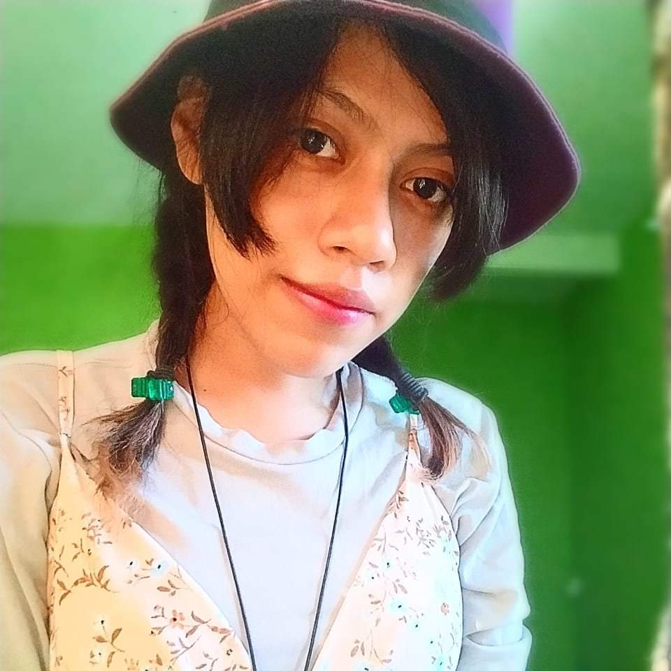

Habilidades
Eficiencia
Mi enfoque se centra en maximizar la productividad y minimizar
los tiempos de inactividad, lo que me permite completar proyectos de manera rápida y
precisa.
Adaptabilidad
Me entusiasma la oportunidad de adquirir nuevas habilidades, me
adapto a los cambios y a las
nuevas situaciones con facilidad.
Electronica
Me enorgullece poder aplicar mis habilidades técnicas para
resolver problemas complejos y
proporcionar soluciones prácticas que satisfagan las necesidades .
Eficiencia
Mi enfoque se centra en maximizar la productividad y minimizar los tiempos de inactividad, lo que me permite completar proyectos de manera rápida y precisa.
Adaptabilidad
Me entusiasma la oportunidad de adquirir nuevas habilidades, me adapto a los cambios y a las nuevas situaciones con facilidad.
Electronica
Me enorgullece poder aplicar mis habilidades técnicas para resolver problemas complejos y proporcionar soluciones prácticas que satisfagan las necesidades .
Proyectos
Este proyecto implicó la creación de un sitio web que imita la
apariencia de Google. Esto incluyó el diseño y
la presentación de contenido similar.
9 mins
Este pequeño proyecto consistio en la realizacion de una interfaz en LabView que permite
la simulacion de un semaforo.
9 mins
El objetivo de esta actividad era familiarizarse con el
funcionamiento del módulo LCD y aprender a controlarlo para la visualización de mensajes.
9 mins

Este proyecto fue bastante exigente; tuvo un
proceso de cuatro
meses y estuvo enfocado en diseñar e implementar un sistema de
purga automatica para un compresor de aire de 5 caballos de fuerza
(HP).
La purga de un compresor de aire implica eliminar contaminantes como agua y aceite que pueden acumularse en el
sistema, lo que es esencial para mantener su rendimiento óptimo .
9 mins

El proyecto se centraba en la implementación de un sistema de válvulas senosoidales diseñado para
mejorar la calidad del agua en un tanque mediante su tratamiento.
Al utilizar este sistema de válvulas, se buscaba
lograr un tratamiento del agua más efectivo, que podría incluir la eliminación de impurezas y la regulación del pH.
9 mins
Se diseñó y fabricó un engranaje tipo hipoidal
cónico, primero simulado en SolidWorks y luego producido mediante
impresión 3D. Este engranaje incluía un circuito básico que
permitia su movimiento.
9 mins
Este proyecto implicó la creación de un sitio web que imita la apariencia de Google. Esto incluyó el diseño y la presentación de contenido similar.
Este pequeño proyecto consistio en la realizacion de una interfaz en LabView que permite la simulacion de un semaforo.
El objetivo de esta actividad era familiarizarse con el funcionamiento del módulo LCD y aprender a controlarlo para la visualización de mensajes.
Este proyecto fue bastante exigente; tuvo un proceso de cuatro meses y estuvo enfocado en diseñar e implementar un sistema de purga automatica para un compresor de aire de 5 caballos de fuerza (HP).
La purga de un compresor de aire implica eliminar contaminantes como agua y aceite que pueden acumularse en el sistema, lo que es esencial para mantener su rendimiento óptimo .
El proyecto se centraba en la implementación de un sistema de válvulas senosoidales diseñado para mejorar la calidad del agua en un tanque mediante su tratamiento.
Al utilizar este sistema de válvulas, se buscaba lograr un tratamiento del agua más efectivo, que podría incluir la eliminación de impurezas y la regulación del pH.
Se diseñó y fabricó un engranaje tipo hipoidal cónico, primero simulado en SolidWorks y luego producido mediante impresión 3D. Este engranaje incluía un circuito básico que permitia su movimiento.
Testimonios
Jose Antonio
Estefania Siempre actúa con principios éticos y se niega a comprometer sus valores,
incluso cuando enfrenta dificultades. Su sinceridad y transparencia son cualidades que
todos deberíamos aspirar a tener.

Rosa Viviana
Estefania tiene un corazón increíblemente bondadoso. Siempre está dispuesta a ayudar a
los demás, ya sea ofreciendo su tiempo, recursos o habilidades.

Angel Gabriel
Estefania Siempre estuvo dispuesta a escucharme, ofrecerme palabras de aliento y ayudarme
a encontrar soluciones. Su empatía y compasión me demostraron que realmente se
preocupaba por mi bienestar.
Jose Antonio
Estefania Siempre actúa con principios éticos y se niega a comprometer sus valores, incluso cuando enfrenta dificultades. Su sinceridad y transparencia son cualidades que todos deberíamos aspirar a tener.
Rosa Viviana
Estefania tiene un corazón increíblemente bondadoso. Siempre está dispuesta a ayudar a los demás, ya sea ofreciendo su tiempo, recursos o habilidades.
Angel Gabriel
Estefania Siempre estuvo dispuesta a escucharme, ofrecerme palabras de aliento y ayudarme a encontrar soluciones. Su empatía y compasión me demostraron que realmente se preocupaba por mi bienestar.